**05-12-2025** - Take a moment to explore these two pages that will be integral to the XcaliburMoon project. AVACORP is set to revolutionize SEO and marketing with its innovative automation, advanced email warming services, and a promising lead attraction software on the horizon. TimeTechPro will elevate time management by merging AI with an extensive database of conditional statements, empowering users with flawless and instant metrics at the click of a button. Please take a moment to review the progress screenshots below related to the ongoing development of the Customer Relationship Management (CRM) system. It is important to note that these images represent a standardized design intended for efficiency, with minimal time expenditure in mind. The implementation of programmatic automation will be incorporated to reduce both workload and associated stress levels. As this project advances, the entire application will be optimized for use on compact mobile devices, including the integration of tablets for functionalities such as timekeeping, accounting applications, CRM, case management, procedural documentation, and collaborative communication. This continuous evolution toward simplicity aims to cultivate a working environment that fosters a sense of achievement, satisfaction, security, and alignment with sound business practices.
https://timetechpro.com/
https://avacorp.org/
**05-09-2025** - I want to express my heartfelt gratitude to the incredible individuals who have already joined us on this journey. Exciting updates have been made! Click here to subscribe and discover the current project timeline.
Click here to subscribe and receive updates about this project!
**05-06-2025** I've made significant strides on the data services project, introducing an AI chat feature powered by Deepseek that enhances user interaction. Additionally, I've made progress on developing a double-entry accounting system, laying the groundwork for robust functionalities. Looking ahead, I plan to incorporate individual profiles for each account and establish procedures that aim to create a non-deletable system through adjustments. Exciting developments are on the horizon! All screenshots are on the data-services page!
**05-04-2025:21:25** I have added progress images below. Additionally, I am developing a setup for email warming and an automation process designed to ensure emails consistently arrive in the primary inbox. This project will implement various levels of encryption to enable organizations to comply with data regulations required by statutes, policies, funding sources, legal frameworks, and general expectations. The database configuration will include multiple relational elements that facilitate accurate delegation while seamlessly enforcing guidelines. This system will unobtrusively leverage technology for effective oversight.
Data services are in the future! Check out the startup page → https://xcaliburmoon.net/
Relational Data, Data Accuracy, and Work Redundancy Due To Tech!
Hello! My name is Crissy. I currently work as a freelancer. I am working towards getting my PHD in computer science and am in my senior level of an advanced education. I want to mention that I have worked with data and businesses for a long time—basically my entire life. I have even experienced the ages of Visual Basic 4, 5, & 6. However, we all find our passion, and I have greatly liked Python lately. It just has a library for everything, and the readability is excellent. I also still place PHP as a priority for database management. I utilize macOS, Linux, and Windows. I even use Raspbian when I work with Raspberry Pi boards. Kali Linux is mainly used for cross-platform testing and security. MacOS for compatibility testing. I like Sublime Text editor when using Windows, and VIM on other operating systems, especially when working with a server.
As I grow in my career, I aim to one day have my own database management company. This will allow me to utilize all the fundamentals I have learned through trial and error, plus the education acquired since I was a teen.
I want to mention that I am working on a system that will allow for easy additions, simple relational data, and possibly zero work redundancy, all with a click of a button and programmatically assisted, incorporating AI.
The pictures included are based on a prototype of a ticket system and a convenience store setup. If you want to join me in this endeavor, please click "About Me" for contact information. You can also use the chat option in the lower right on the about me page. I will respond as quickly as possible, and please don’t forget to include your contact details in the message.
Relational Data:
The picture below represents the potential data for a small, locally owned convenience store. It all starts with, “So let’s keep up with the products.” Then the business grows, and now we need sales. Let’s make ads! “How will we keep up with them?” Is the question! We could add a column, but the issue is that the pricing system may be configured to only the number of columns provided. In this case, we would create another table in the database and make it relational to the original. In other words, the “Product-ID” matches. “Well, it’s been five years down the road, and now we have entry-level workers, and the data is getting very complicated and constantly changing.” “Now, we need level restrictions!” We can create a user-level table related to the “Ad-content.” Now, conditional statements are only required for access control. The virtual machines/environments I am working towards will include already coded software solutions that will automatically start connecting all the dots, without requiring extra resources, including massive data files, trying to keep everything contained, like in one box. Think outside of the box and innovate!
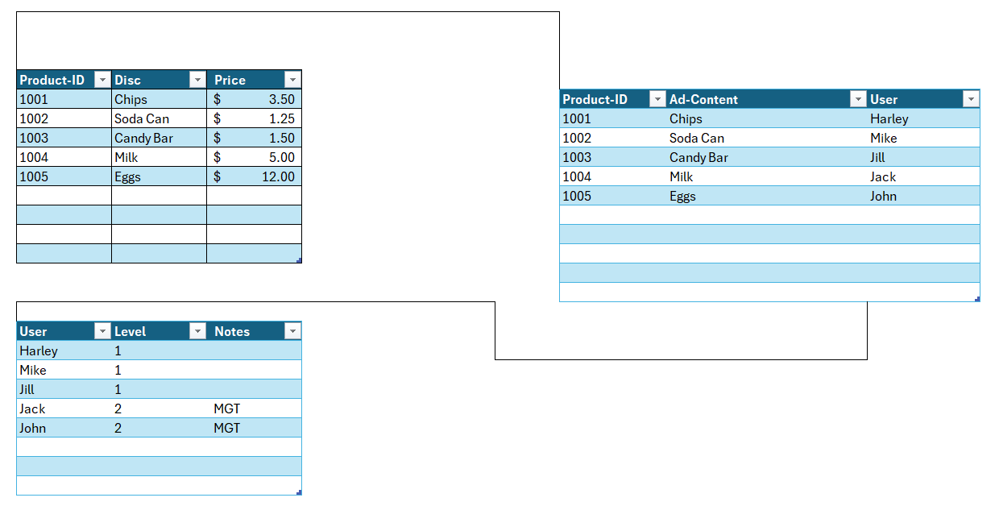
Data Accuracy/Restricted/Required Data:
This is the key to immaculate data and extreme business performance. The included pictures are not the best UI/UX, yet they are just visualized to explain how this setup will work. Although the image below is basic, it visualizes the importance of correct data entry. “What’s the point of keeping up with it if it's not all there and in the correct format?” This keeps everything intact and will significantly improve the data being entered and kept up with. Now everyone can be on the same page, which gets to redundancy, which I will briefly review in the next section.
Work Redundancy Due To Tech:
The name says it all! However, as a company grows, every time a person does something twice or more, the company incurs twice the amount of labor or way more for additional requirements. With the new tech, employment is slimming down because of the rapid change, and some businesses are finding it hard to keep up with their competitors. This is because labor is becoming so expensive due to upgrades in technology. This all adds up quickly; the stressful workload may push people out the door. Now, we are incurring massive amounts of training costs! This system will include interactive training, and there will be options to include helpful information as you go. The created system will most pleasantly take the current procedures and interactively enforce the guidelines when working with data automatically to decrease operational costs. This system will give the additional boost needed.
Conclusion:
Below are a few basic pictures; as this project grows, I will keep updating this page on the progress. The image will show a basic login system and data utilizing MySQL, which will eventually be able to manage all the data effectively without a lot of effort. In production, extra encryption will be put into play. Also, the included time stamping will provide extra quantification of the data. Although this is a simple case, I hope it explains the idea. If you wish to learn more about this, please get in touch with me.
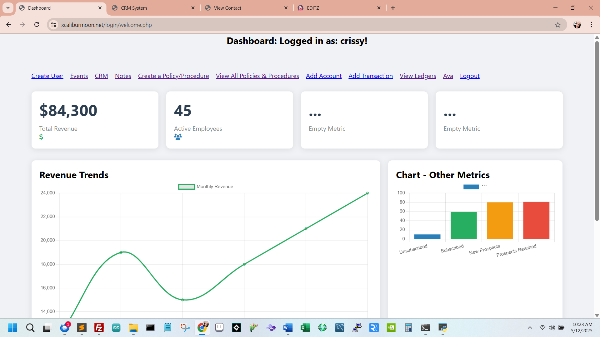
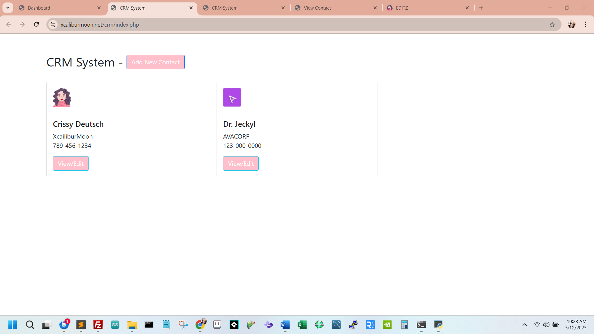
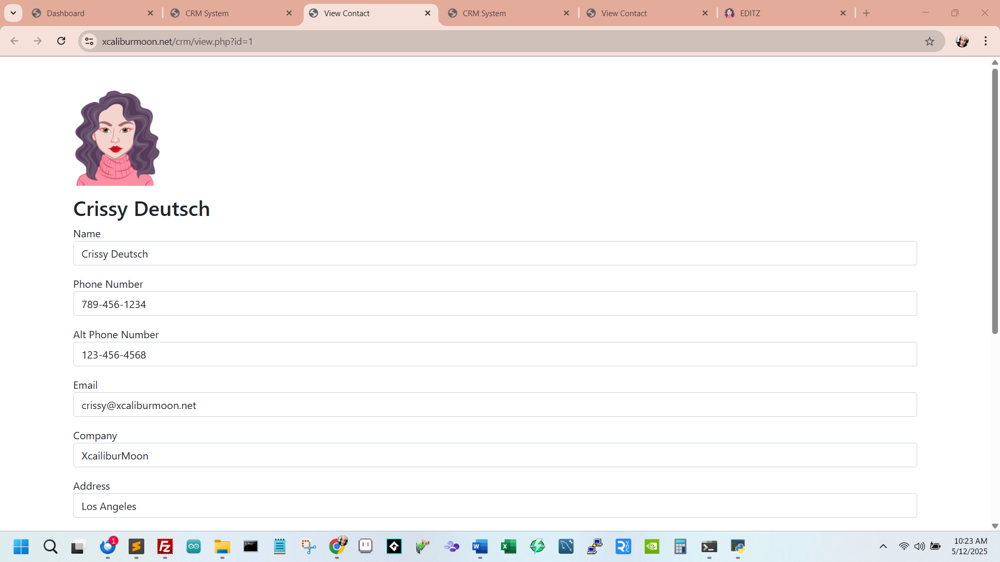
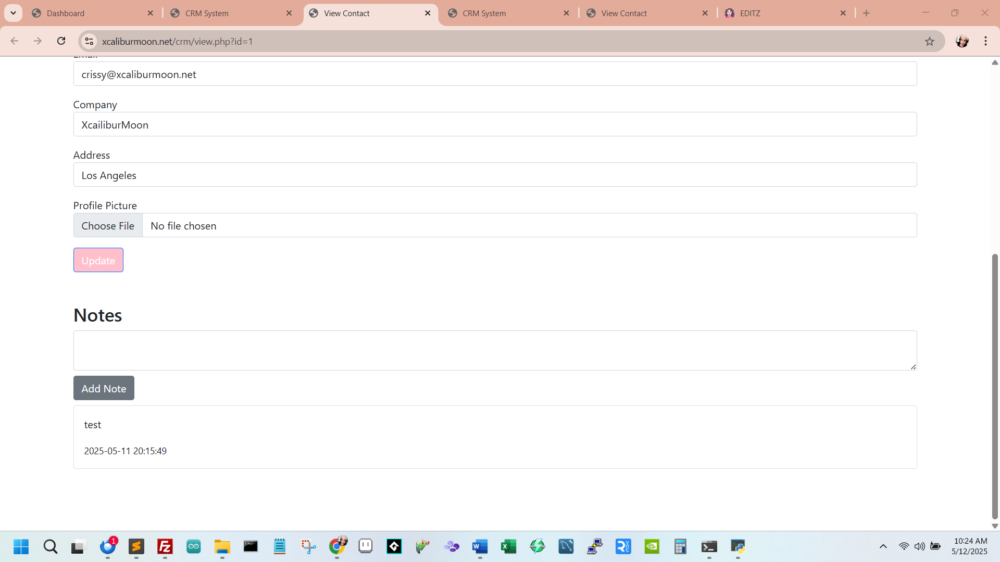
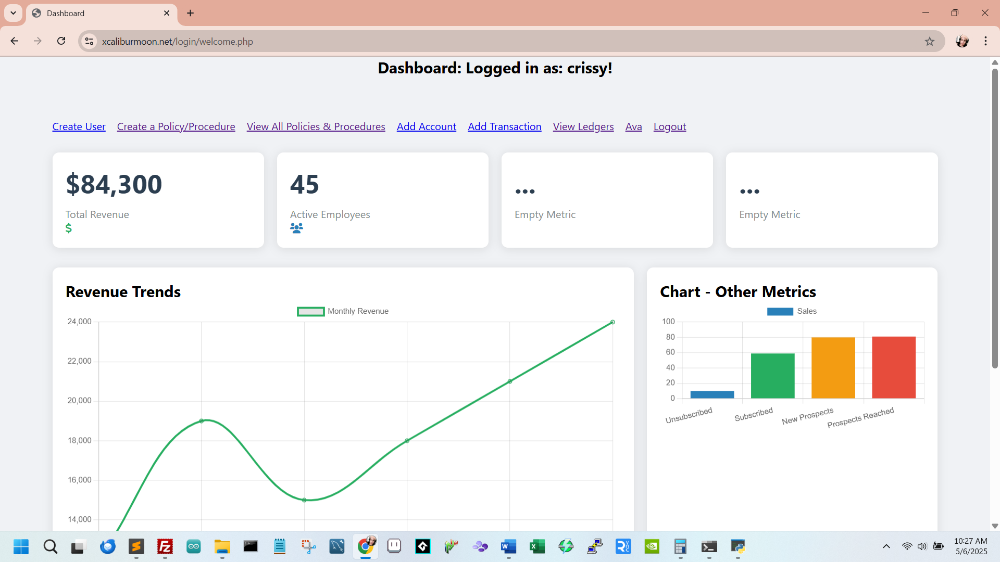
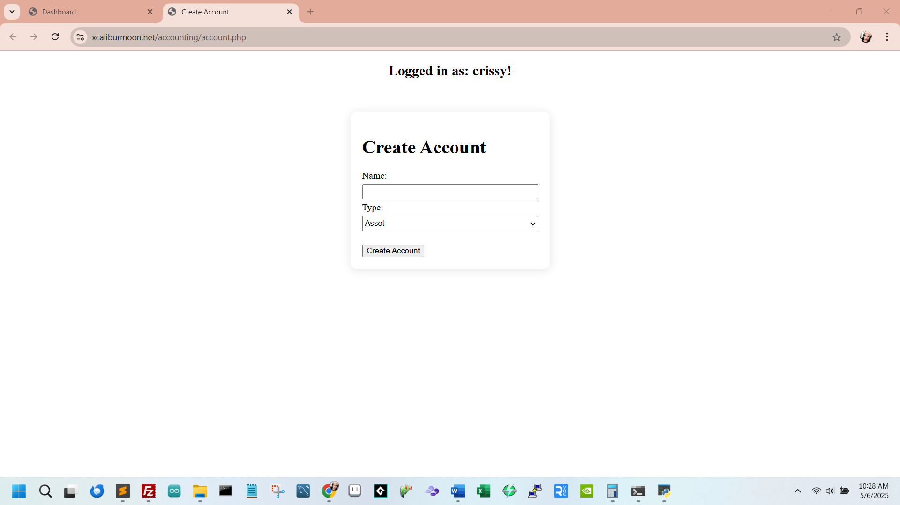
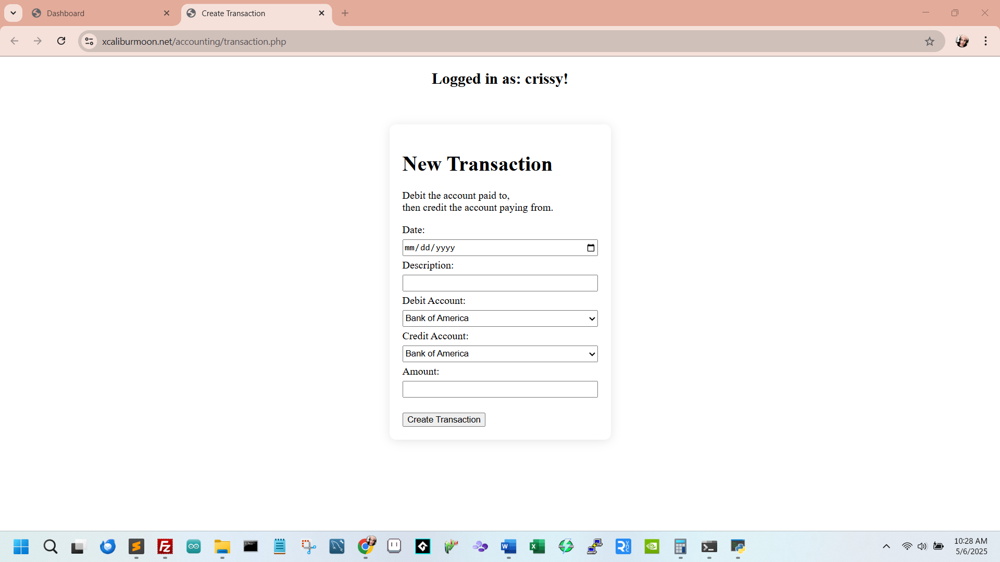
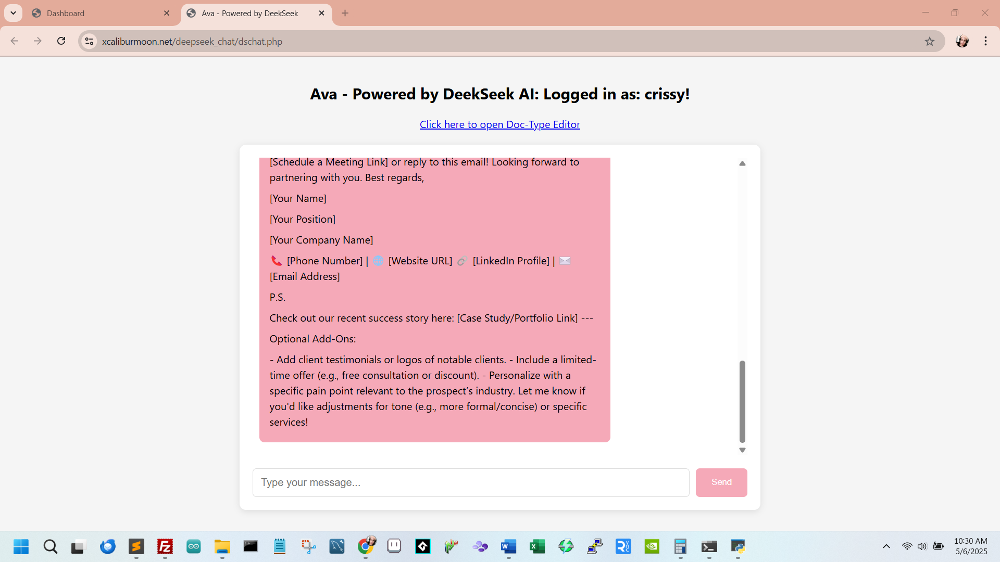
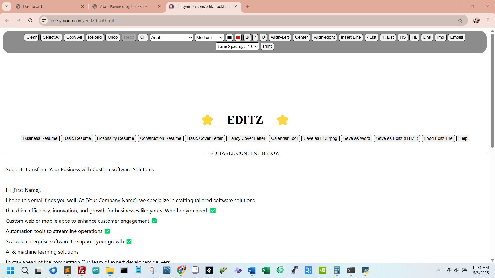
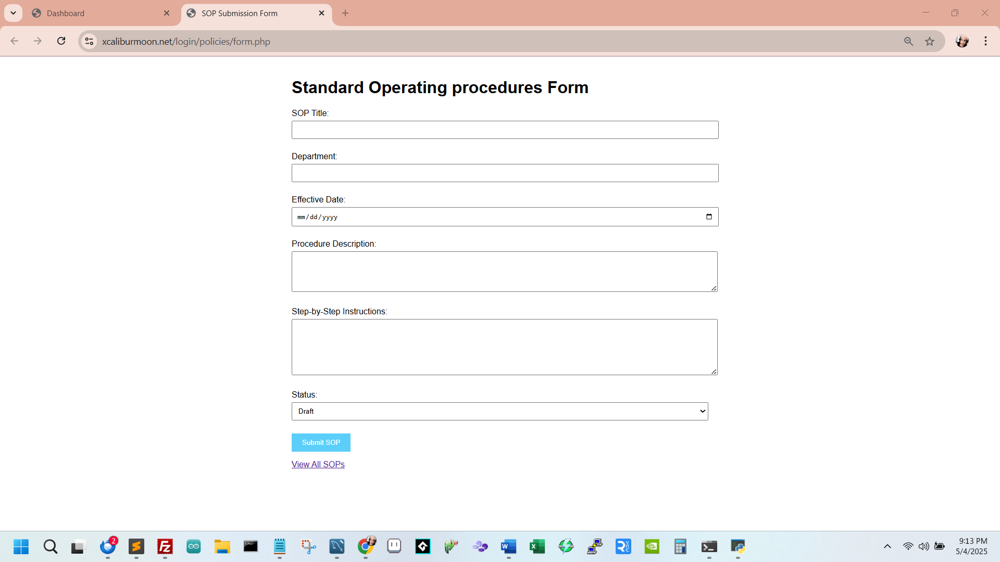
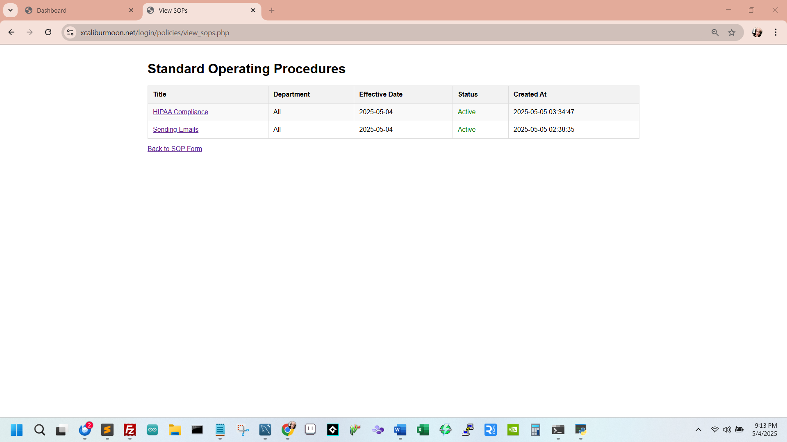
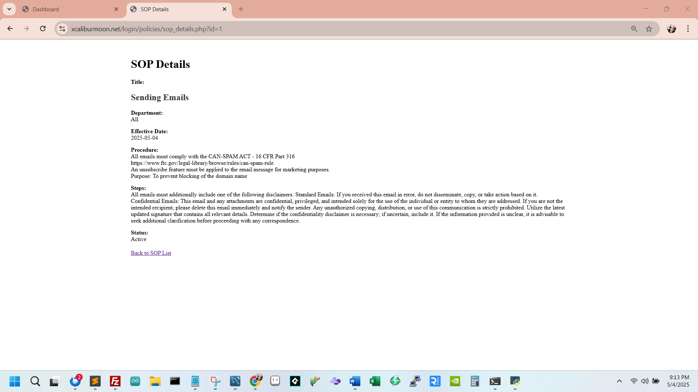
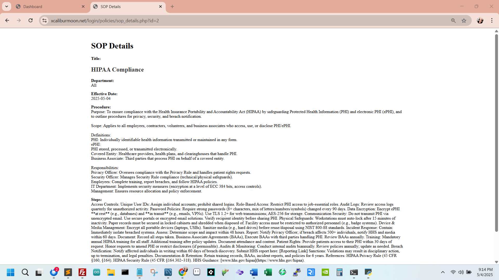
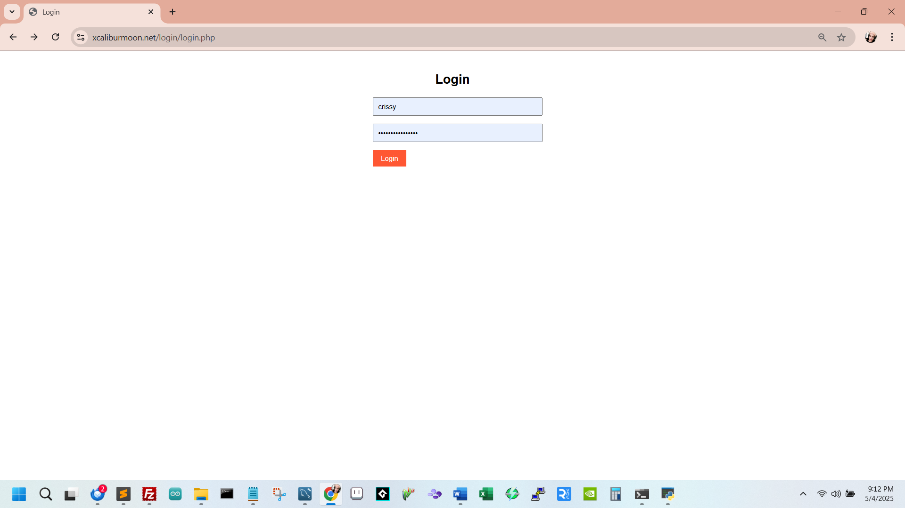
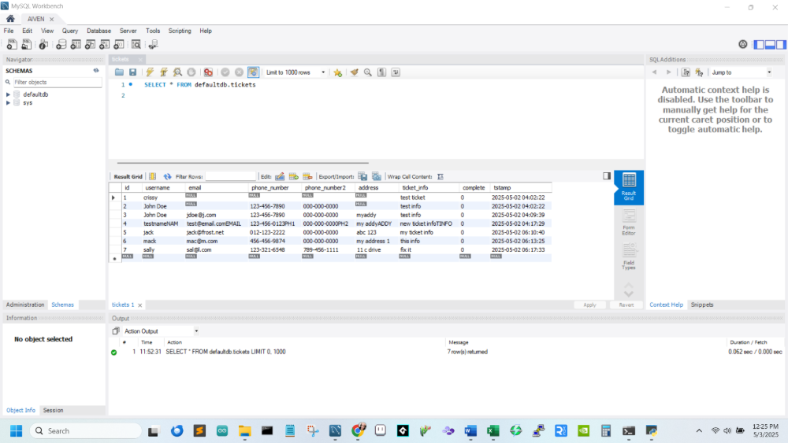
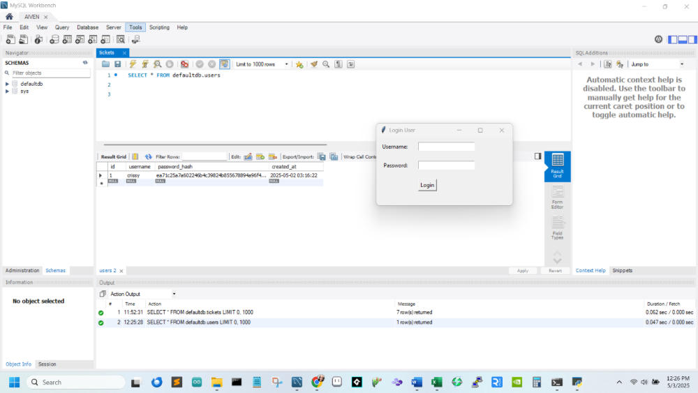